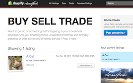

Examples
This page aims to be a collection of everything that batman.js is capable of. Over time it will grow to include more comprehensive examples, in addition to live applications using batman.js.
If you would like to have your app included in this list, please feel free to send a pull request!
Getting Started
If you're just getting started with batman.js, these two examples will prove to be a great starting point. We are working on putting together more comprehensive tutorials. In the meantime, you may also want to check out the documentation, and you can always get more help in the community.
- 
-
Batman Classifieds
A complete open-source Batman app working on top of Rails. Live example and source code.

-
Todo Tutorial
A straightforward walkthrough of creating a simple single page app. A great place to get started with batman.js.
-
A Simple Twitter Search Client
The running example is running on Heroku here and the code is on GitHub here.